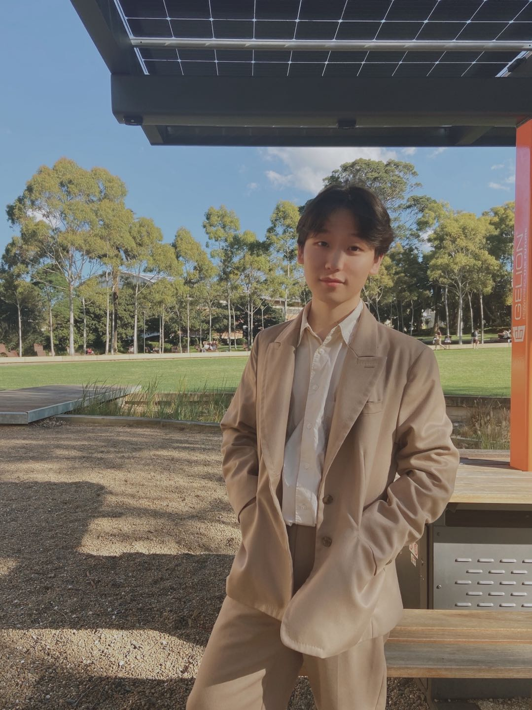

Songhua WuQuant ResearcherPh.D. in Machine Learning
Sydney AI Centre Email: songhua.wu [at] sydney.edu.au
|
 |


Biography
I am a quant researcher at INNO asset management in Beijing.
I received the Ph.D. degree from the School of Computer Science at The University of Sydney (USYD), Sydney in 2023.
I received the B.E. degree from The University of Science and Technology of China (USTC), Hefei, China, in 2019.
My research interests include learning with noisy labels; weakly supervised learning; causal machine learning; fairness.
Education Background
-
Ph.D., 2020.03 - 2023.12 The University of Sydney, Australia, advised by Prof. Tongliang Liu Thesis: Learning with Noisy Labels Incorporating Fairness and Privacy Concerns [PDF]
-
B.Eng., 2015.09 - 2019.06 The University of Science and Technology of China, Hefei, China
Publications
- A Time-Consistency Curriculum for Learning from Instance-Dependent Noisy Labels. [PDF] [CODE] Songhua Wu, Tianyi Zhou, Yuxuan Du, Jun Yu, Bo Han, Tongliang Liu IEEE Transactions on Pattern Analysis and Machine Intelligence (T-PAMI 2024)
- Learning from Noisy Pairwise Similarity and Unlabeled Data. [PDF] [CODE] Songhua Wu, Tongliang Liu, Bo Han, Jun Yu, Gang Niu, Masashi Sugiyama Journal of Machine Learning Research. (JMLR 2022)
- Fair Classification with Instance-dependent Label Noise. [PDF] [CODE] Songhua Wu, Mingming Gong, Bo Han, Yang Liu, Tongliang Liu Conference on Causal Learning and Reasoning (CLeaR 2022)
- Bridging the Gap between Few-Shot Learning and Many-Shot Learning via Distribution Calibration. [PDF] [CODE] Shuo Yang, Songhua Wu, Tongliang Liu, Min Xu IEEE Transactions on Pattern Analysis and Machine Intelligence (T-PAMI 2021)
- A Parametrical Model for Instance-Dependent Label Noise. [PDF] [CODE] Shuo Yang, Songhua Wu, Erkun Yang, Bo Han, Yang Liu, Min Xu, Gang Niu, Tongliang Liu IEEE Transactions on Pattern Analysis and Machine Intelligence (T-PAMI 2023)
- Class2Simi: A Noise Reduction Perspective on Learning with Noisy Labels. [PDF] [CODE] Songhua Wu, Xiaobo Xia, Tongliang Liu, Bo Han, Mingming Gong, Nannan Wang, Haifeng Liu, Gang Niu International Conference on Machine Learning (ICML 2021)
Research Experiences
- Research Intern, Peng Cheng Laboratory, Shenzhen, China, 09/2019 - 01/2020 Federated learning, AutoML [Zhihu]
Teaching Experiences
-
Teaching Assistant, USYD COMP5328 (Advanced Machine Learning), Semester 2 2021
-
Tutor, USYD COMP5328 (Advanced Machine Learning), Semester 2 2020
Academic Services
-
Conference Reviewer: NeurIPS, ICML, ICLR, UAI, etc.
-
Journal Reviewer: Machine Learning, IEEE TNNLS, ACM Computing Surveys, etc.
Honors and Awards
- Faculty of Engineering Research Scholarship, The University of Sydney, 2020-2023
- Outstanding graduate of Anhui Province, 2019
- Outstanding graduate of University of Science and Technology of China, 2019
- Scholarship for outstanding student of University of Science and Technology of China, 2016/2017/2018
- Scholarship of Institute of Electronics, Chinese Academy of Sciences, 2016/2017
| © Songhua Wu | Last update: Feb. 2022 |